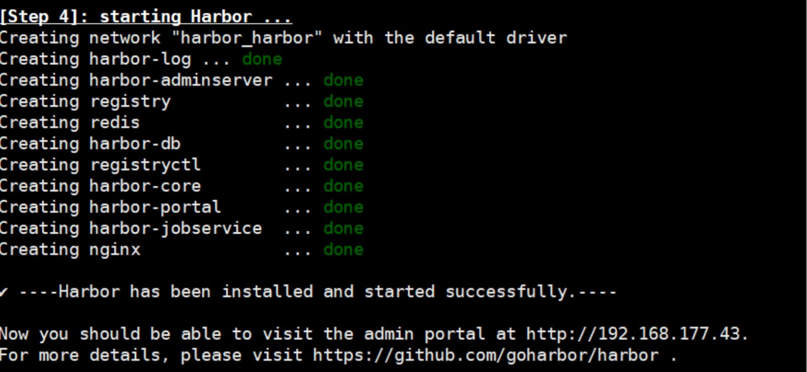
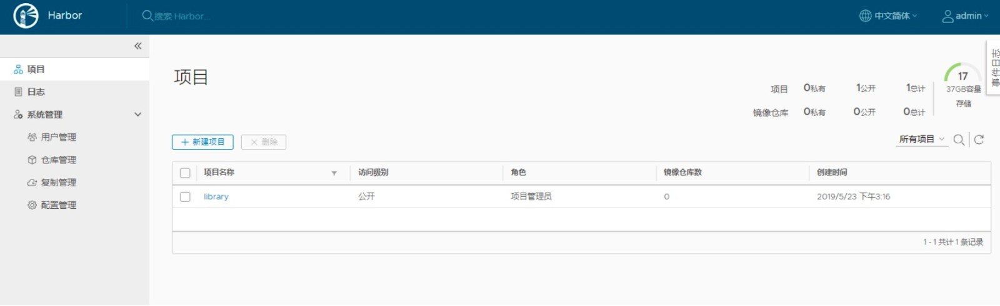
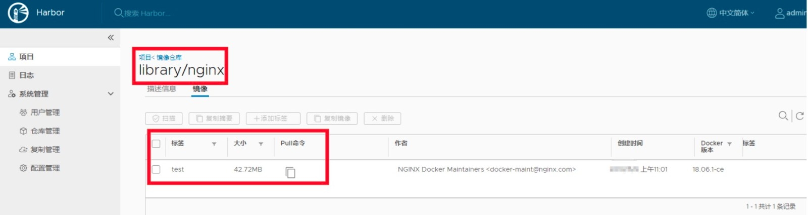
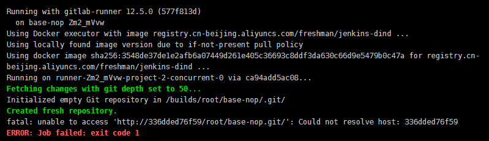
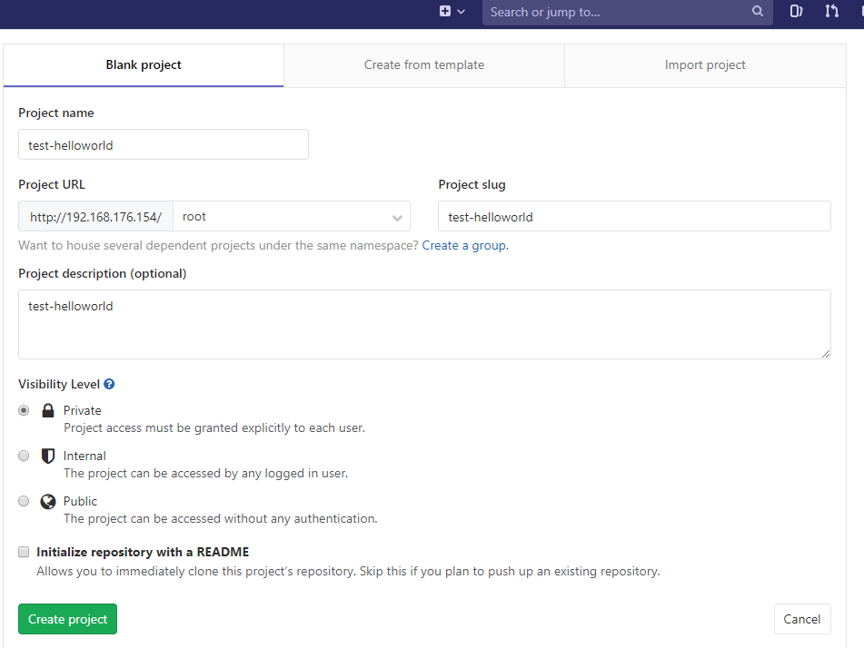
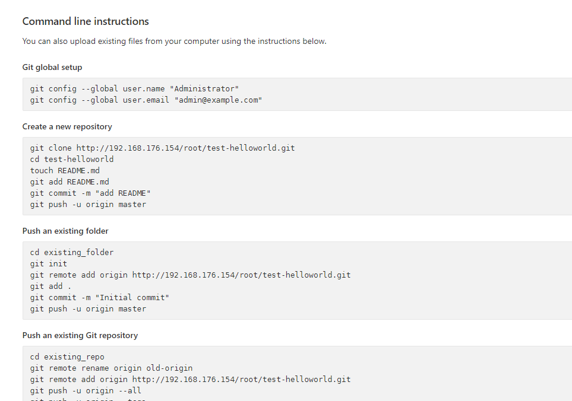
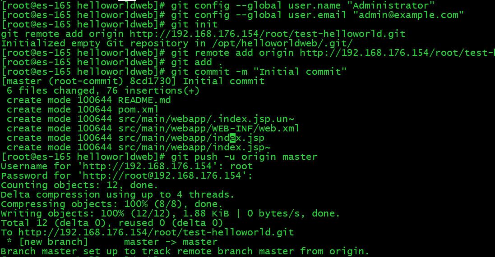
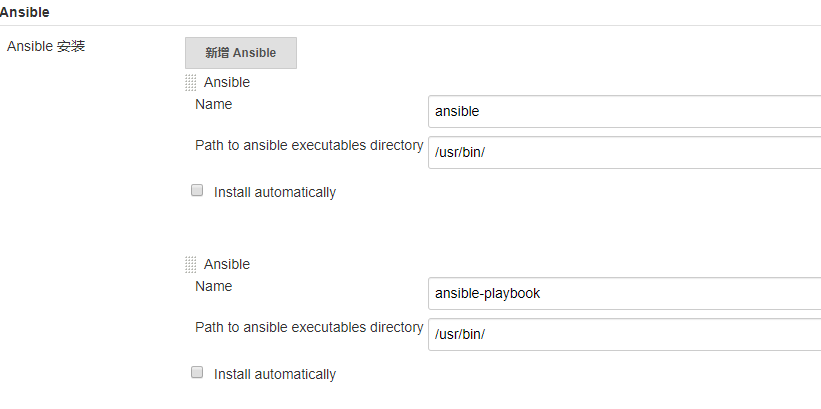

- 01.Jenkins的安装配置与日常维护.md.html
- 02.Jenkins强大的插件功能.md.html
- 03.Devops工具链.md.html
- 04.初探Jenkins CD实践.md.html
- 05.Jenkins常用项目配置参数.md.html
- 06.Jenkins部署之Docker要点.md.html
- 07.Jenkins集成之Ansible要点.md.html
- 08.Jenkins集成Ansible持续部署服务到Docker容器.md.html
- 09.实现自动化引擎之Jenkins Pipeline声明式语法.md.html
- 10.实现自动化引擎之Jenkins Pipeline脚本式语法.md.html
- 11.Pipeline语法进行持续交付与基础实践.md.html
- 12.Jenkins Docker Pipeline插件动态生成Slave节点语法剖析.md.html
- 13.使用 Docker Pipeline插件动态生成Jenkins Slave 实践.md.html
- 14.搞定不同环境下的Jenkins与Kubernetes集群连接配置.md.html
- 15.Jenkins Kubernetes Plugin介绍与语法详解.md.html
- 16.使用Kubernetes编排Jenkins Slave节点持续交付项目.md.html
- 17.使用Kubernetes插件持续部署服务到Kubernetes集群.md.html
- 18.Ansible Plugin插件语法详解与持续部署服务到kubernetes集群.md.html
- 捐赠
03.Devops工具链
基础工具介绍安装配置
在前面的两个章节中简单介绍了一下Jenkins以及插件的安装配置等内容。本系列文章虽然是基于Jenkins 进行展开的，但是实现Devops中的CI/CD也不是仅凭一个工具就能实现的，需要众多Devops工具链的相互协作。所以在配置好Jenkins服务后，本章节来介绍几款与Jenkins集成进行持续交付和持续部署的devops工具包。并且在以后的章节中会通过与Jenkins配合以实现应用服务的构建和部署。
本节主要介绍如下工具的安装配置：
- Docker
- Harbor
- Gitlab
- Ansible
Docker
介绍
Docker 是什么大家都应该都有所了解，一个基于LXC技术构建的的高级容器引擎。Docker以容器为资源分割和调度的基本单位，封装整个软件运行时的环境，为开发者和系统管理员设计的用于构建、发布和运行分布式应用的平台。它是一个跨平台、可移植并且简单易用的容器解决方案。
Docker 基于Linux 内核的cgroup，namespace以及 AUFS 和Union FS等技术，对进程进行封装隔离，属于操作系统层面的轻量级虚拟化技术。
说明
Namespace：是对全局系统资源的一种封装隔离，使得处于不同namespace的进程拥有独立的全局系统资源，改变一个namespace中的系统资源只会影响当前namespace里的进程，对其他namespace中的进程没有影响。Linux内核中提供了7种namesapce隔离系统调用（docker 用到6种）：
UTS：UTS namespace提供主机名和域名的隔离
IPC：进程间通信，涉及的IPC资源包括常见的信号量，消息队列和共享内存。
PID：PID namespace隔离进程PID，两个namespace下的进程可以有相同的Pid，每个Pid的namespace都有自己的计数程序。PID namespace中的第一个进程为PID 1（所有进程的父进程），像linux 中 的init进程。
mount：mount通过隔离文件系统挂载点对隔离文件系统提供支持
Network ：Network namespace主要提供了关于网络资源的隔离（不是真正的网络隔离，只是把网络独立出来）
User ：User namespace主要隔离安全相关的标识符和属性，如用户id，用户组id，root目录 、秘钥以及权限等。
cgroup：对一组进程进行统一的资源监控和限制，是Linux内核提供的一种将进程按组进行管理的机制。cgroup 可以限制、记录任务组使用的物理资源（cpu、memory 、io等），主要作用如下：
资源限制：对任务使用的资源总额进行限制
优先级分配：控制任务运行的优先级
资源统计：统计系统资源的使用量
任务控制：对任务执行挂起、恢复等操作
AUFS 和 Union FS：
UnionFS 是一种为 Linux 操作系统设计的用于把多个文件系统联合到同一个挂载点的文件系统服务
AUFS 即 Advanced UnionFS ，是 UnionFS 的升级版，它能够提供更优秀的性能和效率。
AUFS 作为联合文件系统，它能够将不同文件夹中的层联合（Union）到同一个文件夹中，这些文件夹在 AUFS 中称作分支，整个联合的过程被称为联合挂载（Union Mount）
有关Docker的介绍就简单的介绍到这里，下面看一下Docker的安装
安装
Centos7.x 安装Docker
安装前首先卸载旧版本的Docker服务（如果曾经安装过）
$ sudo yum remove docker docker-common docker-selinux docker-engine docker-client*docker-latest* docker-logrotate
#删除残留文件
$ rm -rf /var/lib/docker
安装存储库包
$ yum install -y yum-utils device-mapper-persistent-data lvm2
设置稳定存储库
$ sudo yum-config-manager --add-repo https://download.docker.com/linux/centos/docker-ce.repo
注意：使用官方的源安装会很慢，可以换成阿里云的
https://mirrors.aliyun.com/docker-ce/linux/centos/docker-ce.repo
安装DOCKER CE
$ yum-config-manager --enable docker-ce-edge && yum install docker-ce -y
启动
$ systemctl start docker
使用脚本自动安装
Docker官方为了简化安装流程，提供了一套安装脚本，CentOS 系统上可以使用这套脚本安装：
$ curl -fsSL get.docker.com -o get-docker.sh
$ sudo sh get-docker.sh --mirror Aliyun
说明：
--mirror表示指定的yum源- 执行这个命令后，脚本就会自动的将一切准备工作做好，并且把Docker 安装在系统中。
默认情况下，docker命令会使用Unix socket与Docker引擎通讯。而只有root 用户和 docker组的用户才可以访问Docker引擎的Unix socket。出于安全考虑，一般Linux系统上不会直接使用root用户。因此，更好地做法是将需要使用docker的用户加入docker用户组(如果你不想使用root用户)。
建立docker组
$ sudo group add docker
将当前用户加入docker组
$ sudo usermod -aG docker $USER
其它系统安装docker可以参考官网 ，比如
Ubuntu安装
https://docs.docker.com/install/linux/docker-ce/ubuntu/
Mac安装
https://docs.docker.com/docker-for-mac/install/
安装还是比较简单的。
测试
Docker 安装完以后就可以进行下一步的基础测试了。
这里以根据官方的nginx镜像启动一个容器为例：
[root@Docker ~]# docker run -itd -p80:80 nginx
Unable to find image 'nginx:latest' locally
latest: Pulling from library/nginx
bc51dd8edc1b: Pull complete
.....
5c472411317e6f1f13ed522d3963331054c84f747cd88d66f52d67be66709973
启动以后，查看并测试访问一下
[root@Docker ~]# docker ps
CONTAINER ID IMAGE COMMAND CREATED STATUS PORTS NAMES
72dd0bd9a12f nginx "nginx -g 'daemon ..." 5 seconds ago Up 2 seconds 0.0.0.0:80->80/tcp gallant_nash
[root@Docker ~]# curl localhost:80
......
</style>
</head>
<body>
<h1>Welcome to nginx!</h1>
<p>If you see this page, the nginx web server is successfully installed and
......
</body>
</html>
在使用docker run命令启动一个容器的时候，如果该镜像在本地不存在，默认会从docker hub拉取镜像，在这一过程中可能拉取镜像的速度可能会很慢，这是由于国内网络访问Docker hub网络慢造成的。这就需要给docker服务配置镜像加速器了，用于提高镜像拉取速度。
对于Centos系统，编辑/usr/lib/systemd/system/docker.service文件，找到ExecStart= 这一行，在这行最后添加--registry-mirror="加速器地址"，如：
ExecStart=/usr/bin/dockerd --registry-mirror=https://jxus37ad.mirror.aliyuncs.com
或者使用docker官方加速器
https://registry.docker-cn.com
或者使用官方的方法
#docker官方镜像加速，如果文件不存在则新建文件，并且保证文件符合json规范
cat /etc/docker/daemon.json
{
"registry-mirrors": [
"https://registry.docker-cn.com"
]
}
配置完以后需要重启docker服务
systemctl daemon-reload
systemctl restart docker
在命令行执行 docker info，如果从结果中看到了上面添加的加速器内容，说明配置成功。比如：
Registry Mirrors: https://registry.docker-cn.com/
有关docker的安装配置就简单的介绍到这里。那么Jenkins与Docker集成能干什么呢？根据jenkins官方提供的插件来看，主要是两个方面的功能：一个是使用docker作为应用服务的部署环境；另一个是使用docker作为jenkins的动态slave节点。实际工作中常用的功能就是使用docker作为jenkins 的动态slave节点，用于提高jenkins服务的性能以及效率，关于如何集成使用，会在以后的章节中详细介绍。
Harbor
在介绍Harbor之前，有必要先了解一下docker的镜像仓库。镜像仓库（Repository）是集中存放镜像的地方。
一个容易混淆的概念是注册服务器（Registry）。实际上注册服务器是管理仓库的具体服务器，每个服务器上可以有多个仓库，而每个仓库下面有多个镜像。从这方面来说，仓库可以被认为是一个具体的项目或目录。例如，对于仓库地址dl.dockerpool.com/ubuntu来说，dl.dockerpool.com是注册服务器地址，ubuntu 是仓库名。
大部分时候，并不需要严格区分这两者的概念。
Harbor正是一个用于存储和分发Docker镜像的企业级Registry服务器， Harbor支持安装在多个Registry节点的镜像资源复制，镜像全部保存在私有Registry中。作为一个企业级私有Registry服务器，Harbor提供了更好的性能和诸如用户管理，访问控制和活动审计等功能。提升用户使用Registry构建和运行环境传输镜像的效率。
Harbor组件
Harbor在架构上主要由6个组件构成：
Proxy：Harbor的registry，UI，token等服务，通过一个前置的反向代理统一接收浏览器、Docker客户端的请求，并将请求转发给后端不同的服务。
Registry： 负责储存Docker镜像，并处理docker push/pull 命令。由于我们要对用户进行访问控制，即不同用户对Docker image有不同的读写权限，Registry会指向一个token服务，强制用户的每次docker pull/push请求都要携带一个合法的token, Registry会通过公钥对token 进行解密验证。
Core services： 这是Harbor的核心功能，主要提供以下服务：
UI：提供图形化界面，帮助用户管理registry上的镜像（image）, 并对用户进行授权。
webhook：为了及时获取registry 上image状态变化的情况， 在Registry上配置webhook，把状态变化传递给UI模块。
token 服务：负责根据用户权限给每个docker push/pull命令签发token. Docker 客户端向Regiøstry服务发起的请求,如果不包含token，会被重定向到这里，获得token后再重新向Registry进行请求。
Database：为core services提供数据库服务，负责储存用户权限、审计日志、Docker image分组信息等数据。
Job Services：提供镜像远程复制功能，可以把本地镜像同步到其他Harbor实例中。
Log collector：为了帮助监控Harbor运行，负责收集其他组件的log，供日后进行分析。
Harbor的每个组件都是以Docker容器的形式构建的，官方也是使用Docker Compose来对它进行部署。用于部署Harbor的Docker Compose模板位于 harbor/docker-compose.yml，harbor安装好以后通过docker ps命令或者docker-compose ps命令可以看到Harbor是由7个（新版本是9个）容器组成的，如下所示：
# docker-compose ps
Name Command State Ports
------------------------------------------------------------------------------------------------------------------------------
harbor-adminserver /harbor/harbor_adminserver Up
harbor-db docker-entrypoint.sh mysqld Up 3306/tcp
harbor-jobservice /harbor/harbor_jobservice Up
harbor-log /bin/sh -c crond && rm -f ... Up 127.0.0.1:1514->514/tcp
harbor-ui /harbor/harbor_ui Up
nginx nginx -g daemon off; Up 0.0.0.0:443->443/tcp, 0.0.0.0:4443->4443/tcp, 0.0.0.0:80->80/tcp
registry /entrypoint.sh serve /etc/ ... Up 5000/tcp
说明
nginx：nginx负责流量转发和安全验证，对外提供的流量都是从nginx中转，所以开放https的443端口，它将流量分发到后端的ui和正在docker镜像存储的docker registry。
harbor-jobservice：harbor-jobservice 是harbor的job管理模块，job在harbor里面主要是为了镜像仓库之前同步使用的;
harbor-ui：harbor-ui是web管理页面，主要是前端的页面和后端CURD的接口;
registry：registry就是docker原生的仓库，负责保存镜像。
harbor-adminserver：harbor-adminserver是harbor系统管理接口，可以修改系统配置以及获取系统信息。
harbor-db：harbor-db是harbor的数据库，这里保存了系统的job以及项目、人员权限管理。由于本harbor的认证也是通过数据，在生产环节大多对接到企业的ldap中；
harbor-log：harbor-log是harbor的日志服务，统一管理harbor的日志。通过inspect可以看出容器统一将日志输出的syslog。
这几个容器通过Docker link的形式连接在一起，这样，在容器之间可以通过容器名字互相访问。对终端用户而言，只需要暴露proxy （即Nginx）的服务端口，对于其他的组件用途只需要做个简单的了解即可
安装与配置
下载offline 版本的Harbor
https://github.com/goharbor/harbor/releases
配置Harbor
$ wget https://storage.googleapis.com/harbor-releases/release-1.7.0/harbor-offline-installer-v1.7.5.tgz
$ tar xvf harbor-offline-installer-v1.7.5.tgz
$ cd harbor
修改harbor.cfg内容如下：
# 访问管理UI与注册服务的IP地址或主机名，不要使用localhost或127.0.0.1，因为Harbor需要被外部的客户端访问
hostname = 192.168.176.155
# 修改管理员密码
harbor_admin_password = Harbor12345
只需要修改harbor的地址和登录密码即可，前提需要安装docker-compose
$ sudo curl -L https://github.com/docker/compose/releases/download/1.17.1/docker-compose-`uname -s`-`uname -m` > /usr/local/bin/docker-compose
$ sudo chmod +x /usr/local/bin/docker-compose
执行 ./install.sh 即可自动下载镜像并启动

启动以后访问Harbor http://192.168.176.155/harbor/sign-in ，用户/密码 admin Harbor2345

到这里Harbor就安装完成了
关闭与启动 Harbor 命令
# harbor 目录下
#前台启动
docker-compose up
#后台启动
docker-compose up -d
#关闭
docker-compose down
Docker 默认不允许非 HTTPS 方式推送镜像。但是可以通过Docker的配置选项来取消这个限制
$ cat /usr/lib/systemd/system/docker.service |grep dockerd
ExecStart=/usr/bin/dockerd -H unix:// --insecure-registry 192.168.176.155
$ docker login 192.168.176.155
Username: admin
Password:
WARNING! Your password will be stored unencrypted in /root/.docker/config.json.
Configure a credential helper to remove this warning. See
https://docs.docker.com/engine/reference/commandline/login/#credentials-store
Login Succeeded
从上面的登录信息可以看到docker私有仓库认证的凭证存放在/root/.docker/config.json文件。
测试推送镜像
$ docker tag nginx 192.168.176.155/library/nginx:test
$ docker push 192.168.176.155/library/nginx:test
The push refers to repository [192.168.176.155/library/nginx]
332fa54c5886: Pushed
6ba094226eea: Pushed
6270adb5794c: Pushed
test: digest: sha256:e770165fef9e36b990882a4083d8ccf5e29e469a8609bb6b2e3b47d9510e2c8d size: 948
登录harbor查看

到这里，harbor的基本安装配制就完成了。
GitLab
介绍
GitLab是一个开源的用于代码仓库管理的项目，使用Git作为代码管理工具，并在此基础上搭建起来的web服务。
Gitlab也是比较受欢迎并且众多公司在用的免费的代码托管服务，除了作为源码仓库服务外，Gitlab还有另一个重要的功能：Gitlab-CI，一套基于Gitlab的持续集成系统。Gitlab 8.0版本开始默认集成CI功能（GitLab CI），通过在项目内创建.gitlab-ci.yaml 配置文件读取CI任务并通过被称为 GitLab Runner 的Agent端进行持续交付与部署操作。每当gitlab仓库有代码更新的时候，就会触发提前定义的脚本（.gitlab-ci.yaml）进行预设定的操作（比如代码编译、测试、部署等）。
安装
Gitlab的安装比较简单，GitLab官网针对不同的系统也给出了比较详细的安装步骤，可以参考这里
为了测试方便，我这里直接使用docker安装，使用如下命令启动容器
docker run -d -p 4443:443 -p 80:80 -p 2222:22 --name gitlab --restart always -v /srv/gitlab/config:/etc/gitlab -v /srv/gitlab/logs:/var/log/gitlab -v /src/gitlab/data:/var/opt/gitlab gitlab/gitlab-ee
说明：
gitlab镜像默认使用的端口为80，在使用docker部署gitlab并设置启动参数时，宿主机端口最好也使用80（也就是 -p80:80参数），不要随意改，否则会遇到各种意想不到的坑。比如下面这个：
在使用docker方式安装gitlab时，遇到一个问题（使用vm默认没有此问题），因为映射的本地端口和gitlab内部端口不同，在使用gitlab-runner容器拉取应用代码的时候出现网络不通的问题，如下所示：

说明：
gitlab-runner默认拉取代码时，会使用gitlab 服务docker内部的ip或者hostname去拉取代码，肯定会导致网络不通，所以就需要做端口映射的时候保持宿主机和容器端口一样，由于gitlab默认内部端口为80，所以宿主机端口最好也用80
如果非要用别的端口怎么办？比如使用-p8099:80，那么下面将会进入一个填坑的过程，虽然修改gitlab的配置文件、重启容器和服务可以解决上面的问题，但是这个过程坑也比较多，比如修改完地址和端口以后虽然能够拉取代码，有可能会影响Gitlab-CI的pipeline的操作等，或者修改完后重启容器又恢复默认配置等。所以为了保险起见，在做端口映射的时候宿主机端口最好用80
在Gitlab中创建好项目后，从项目配置中获取项目地址的时候，会发现项目的地址为http://$container_id/$group/$project_name.git，虽然知道gitlab的实际地址，但是每创建一个项目，项目地址中的host都是容器的id，并且复制出来使用时都要手动进行替换，对于严谨的运维来说这是不能接受的，所以还需要统一修改项目的url地址。
容器启动以后，修改宿主机/srv/gitlab/config/gitlab.rb或者容器/etc/gitlab/gitlab.rb文件，找到external_url关键字，去掉注释，并改成宿主机的ip地址（用于更改新创建的项目里拉取代码的地址）
external_url 'http://192.168.176.154'
然后重新启动gitlab
两种方法（任选）：
#进入容器
gitlab-ctl restart
或者直接
# 重启容器
docker restart gitlab
测试
创建一个项目，比如我们要测试的项目

点击create project以后，跳转到如下所示的界面

该页面表示我们创建项目成功，并且给出了第一次提交代码的操作步骤。该步骤针对三种情况，第一种是我们要提交到代码仓库的文件不存在时，需要我们自己创建一个目录，并在该目录下创建文件上传到仓库，参考第一至二步骤；如果我们的项目文件存在，且不是git存储库，直接则直接参考第一三步骤即可；如果我要上传一个已经存在的项目，并且该项目为git存储库，则参考第一和第四步骤即可。
我这里使用的第二种情况，直接将已经存在的项目上传到仓库。如下所示：

[root@es-165 helloworldweb]# git config --global user.name "Administrator"
[root@es-165 helloworldweb]# git config --global user.email "[email protected]"
[root@es-165 helloworldweb]# git init
git remote add origin http://192.168.176.154/root/test-helloworld.git
Initialized empty Git repository in /opt/helloworldweb/.git/
[root@es-165 helloworldweb]# git remote add origin http://192.168.176.154/root/test-helloworld.git
[root@es-165 helloworldweb]# git add .
[root@es-165 helloworldweb]# git commit -m "Initial commit"
[master (root-commit) 8cd1730] Initial commit
6 files changed, 76 insertions(+)
create mode 100644 README.md.html
create mode 100644 pom.xml
create mode 100644 src/main/webapp/.index.jsp.un~
create mode 100644 src/main/webapp/WEB-INF/web.xml
create mode 100644 src/main/webapp/index.jsp
create mode 100644 src/main/webapp/index.jsp~
[root@es-165 helloworldweb]# git push -u origin master
Username for 'http://192.168.176.154': root
Password for 'http://[email protected]':
Counting objects: 12, done.
Delta compression using up to 4 threads.
Compressing objects: 100% (8/8), done.
Writing objects: 100% (12/12), 1.88 KiB | 0 bytes/s, done.
Total 12 (delta 0), reused 0 (delta 0)
To http://192.168.176.154/root/test-helloworld.git
* [new branch] master -> master
Branch master set up to track remote branch master from origin.
然后在其他机器通过git clone命令直接测试即可。
Ansible
上面介绍完docker和gitlab，接下来简单介绍并安装一下比较流行的自动化运维工具Ansible。
介绍
Ansible 是一个开源的基于Python paramiko（Python实现的ssh协议库）开发的分布式、无需客户端、轻量级的自动化配置管理工具。Ansible基于模块化工作，本身没有批量部署的能力，它只是提供一种框架，真正具有批量部署功能的是ansible所运行的模块。ansible实现了批量系统配置、批量程序部署、批量运行命令等功能，配置语法使用 YMAL 及 Jinja2模板语言。
安装
Ansible是无代理的自动化工具，默认情况下通过SSH协议管理计算机。安装后，Ansible不会添加数据库，并且没有启动或继续运行守护程序。只需将其安装在一台计算机上，它就可以从该中心管理整个远程计算机。
前提条件：
当前，Ansible控制节点可以从安装了Python 2（2.7版）或Python 3（3.5版及更高版本）的任何计算机上运行。这包括Red Hat，Debian，CentOS，macOS，任何BSD等。控制节点不支持Windows。
安装前首先需要解决依赖关系：
yum -y install python-jinja2 PyYAML python-paramiko python-babel python-crypto
tar包安装
https://github.com/ansible/ansible/releases ##下载Ansible，解压安装
python setup.py build
python setup.py install
yum 安装
$ yum install https://dl.fedoraproject.org/pub/epel/epel-release-latest-7.noarch.rpm
$ sudo yum install ansible
更多平台安装可参考官网
安装完以后执行下面命令查看是否安装成功
$ ansible --version
ansible 2.7.6
config file = /etc/ansible/ansible.cfg
configured module search path = [u'/root/.ansible/plugins/modules', u'/usr/share/ansible/plugins/modules']
ansible python module location = /usr/lib/python2.7/site-packages/ansible
executable location = /usr/bin/ansible
python version = 2.7.5 (default, Aug 7 2019, 00:51:29) [GCC 4.8.5 20150623 (Red Hat 4.8.5-39)]
出现上面内容说明ansible安装成功。
修改通过上面命令获取的ansible默认使用的配置文件（config file参数所指定的文件）host_key_checking参数值（去掉注释，true改为false）
host_key_checking = False
用于解决ansible首次连接_host_服务器时需要验证的问题
测试
首先可以通过默认的localhost组进行ping操作，比如
[root@ansible ~]# ansible localhost -m ping
localhost | SUCCESS => {
"changed": false,
"ping": "pong"
}
Ansible通过ssh实现配置管理、应用部署、任务执行等功能。因此要使用ansible，需要先配置ansible端能基于免密钥认证连接被管理的节点（用户名和密码也可以，本节暂时不做演示），如下所示
在ansible端通过ssh-keygen -t rsa -P ''生成密钥对以后，执行如下命令
ssh-copy-id -i ~/.ssh/id_rsa.pub <要被管理的主机ip>
执行完成后，创建/etc/ansible/hosts文件，将刚刚做完免密认证的主机ip添加进去-
比如
$ cat /etc/ansible/hosts
[ansible_ag1] #该名称自定义
192.168.177.43 #被远程管理的主机ip
然后执行如下命令
$ ansible ansible_ag1 -m shell -a "ifconfig"
192.168.177.43 | CHANGED | rc=0 >>
docker0: flags=4099<UP,BROADCAST,MULTICAST> mtu 1500
inet 172.17.0.1 netmask 255.255.0.0 broadcast 172.17.255.255
inet6 fe80::42:91ff:fea9:955c prefixlen 64 scopeid 0x20<link>
......
ens192: flags=4163<UP,BROADCAST,RUNNING,MULTICAST> mtu 1500
inet 192.168.177.43 netmask 255.255.254.0 broadcast 192.168.177.255
......
上面的ansible命令表示使用-m参数指定的shell模块，去远程主机执行通过-a参数指定命令”ifconfig”。
ansible测试没问题以后，我们就可以在jenkins中配置ansible的环境变量了。- 点击 “Manage Jenkins”—> “Global Tool Configuration(全局工具配置)“，在跳转的界面中找到Ansible 参数项，点击新增ansible，配置ansible命令的环境变量，如下所示

配置好保存即可
有关基础工具安装配置的内容到这里就介绍到这里，内容都相对比较简单，在以后的章节中会具体介绍使用这些工具的方法。
© 2019 - 2023 Liangliang Lee. Powered by gin and hexo-theme-book.